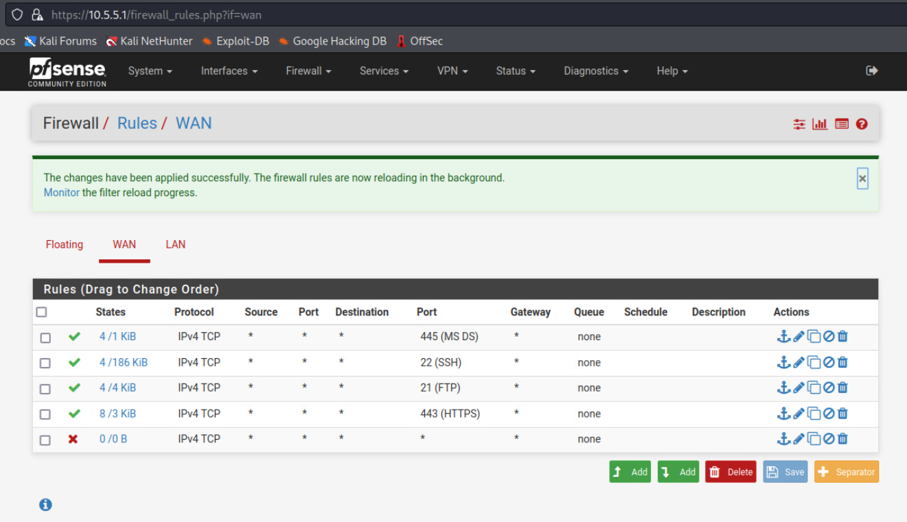

Galactic Museum Solution
[DISTRIBUTION STATEMENT A] This material has been approved for public release and unlimited distribution.
Overview
The Aurelian’s have a massive museum where they showcase many of the objects they’ve collected from the thousands of worlds they have conquered. The crew of the Dauntless would love to get access to the archives but the snobbish Aurelian Elite caste members won’t give them permission to dock, as they consider the human’s spaceship to be a massive deathtrap as soon as they detect the nuclear reactor on-board. The only way space-OSHA regulations would even allow them near the precious museum is if they are reclassified as a garbage-scow hauling hazardous waste. As such, the players must meet a compliance checklist for such a vessel.
Getting Started
- From one of the operator terminals, open a web browser and navigate to
10.10.10.151. -
Click the Grade Challenge button.

You will receive a series of messages detailing the state of the seven systems that must be compliant for the grading script to pass.

-
Connect to each of the virtual machines (VMs) and make the necessary changes to make them compliant.
Operator Terminal 1 (operator-terminal-1)
Disable root login via SSH
- Open the
/etc/ssh/sshd_configfile. - Find
PermitRootLoginsetting and change it to “no”. - Save the file and restart the SSH service:
sudo systemctl restart sshd.
Make the samba share read-only
- Open the
/etc/samba/smb.conffile. -
Find the sharedfiles configuration section.
[sharedfiles] path = /home/user/sharedfiles valid users = user read only = no -
Change the
read onlysetting from "no" to "yes". - Save the file and restart the service:
sudo systemctl restart smbd.
Operator Terminal 2 (operator-terminal-2)
Disable root login via SSH
- Open the
/etc/ssh/sshd_configfile. - Find
PermitRootLoginsetting and change it to “no”. - Save the file and restart the SSH service:
sudo systemctl restart sshd.
Change the webapp account password on the PostgreSQL database server
Connect to the local database server.
sudo -i -u postgres
psql
ALTER USER webapp WITH PASSWORD 'new_password';
Type and enter exit twice to return to the standard terminal prompt.
The password can be changed to any value other than the current value which is: password
Restart the postgresql service to avoid potential grading errors related to Postgres: sudo systemctl restart postgresql.
Operator Terminal 3 (operator-terminal-3)
Disable root login via SSH
- Open the
/etc/ssh/sshd_configfile. - Find
PermitRootLoginsetting and change it to “no”. - Save the file and restart the SSH service:
sudo systemctl restart sshd.
Disable anonymous access to the FTP server
- Open the
/etc/vsftpd.conffile. - Edit the setting
anonymous_enable. - Change it from:
anonymous_enable=YESto:anonymous_enable=NO. -
Remove these settings:
anon_root=/home/user/ftp/ no_anon_password=YES hide_ids=YES -
Save the file and restart the service:
sudo systemctl restart vsftpd.
Make the Samba share read-only
- Open the
/etc/samba/smb.conffile. -
Find the sharedfiles configuration section.
[sharedfiles] path = /home/user/sharedfiles valid users = user read only = no -
Change the
read onlysetting fromnotoyes. - Save the file and restart the service:
sudo systemctl restart smbd.
Operator Terminal 4 (operator-terminal-4)
Disable root login via SSH
- Open the
/etc/ssh/sshd_configfile. - Find
PermitRootLoginsetting and change it to “no”. - Save the file and restart the SSH service:
sudo systemctl restart sshd.
Change the webapp account password on the PostgreSQL database server
Connect to the local database server.
sudo -i -u postgres
psql
ALTER USER webapp WITH PASSWORD 'new_password';
Type and enter exit twice to return to the standard terminal prompt.
The password can be changed to any value other than the current value which is: password
Restart the postgresql service to avoid potential grading errors related to Postgres: sudo systemctl restart postgresql.
Create and install an SSL certificate in Apache
Warning
The following section must be completed precisely as written and can be tedious. Take care to follow the procedures as described below.
Generate the Root CA, Intermediate and Server Certificates.
-
On Operator Terminal 4, run the following commands:
cd /home/user mkdir root cd root mkdir tls cd tls mkdir intermediate mkdir certs mkdir private echo 01 > serial touch index.txt cp /etc/ssl/openssl.cnf /home/user/root/tls/ sudo vi openssl.cnf -
Find the
[ CA_default ]section and update the following settings:dir = /home/user/root/tls certificate = $dir/certs/cacert.pem new_certs_dir = $dir/certs -
Add this section below the
[ v3_ca ]section:[ v3_ca ] subjectKeyIdentifier = hash authorityKeyIdentifier = keyid:always,issuer basicConstraints = critical, CA:true, pathlen:0 keyUsage = critical, digitalSignature, cRLSign, keyCertSign -
Save the file.
-
Generate the certificate key.
openssl genrsa -out private/cakey.pem 4096 -
View the key.
openssl rsa -noout -text -in private/cakey.pem -
Create the root certificate. When you run this command you will need to answer a few questions (the specific answers you provide do not matter in the context of the solution).
openssl req -new -x509 -config openssl.cnf -extensions v3_ca -key private/cakey.pem -out certs/cacert.pem -
Convert it to PEM format.
openssl x509 -in certs/cacert.pem -out certs/cacert.pem -outform PEM -
Create the intermediate certificate by running the following commands:
cd intermediate mkdir certs mkdir csr mkdir private touch index.txt echo 01 > serial echo 01 > crlnumber cd .. cp openssl.cnf intermediate/ cd intermediate sudo vi openssl.cnf -
Find the
[ CA_default ]section and update the following settings:After updating, ensure there is a space betweendir = /home/user/root/tls/intermediate # Where everything is kept certificate = $dir/certs/intermediate.cacert.pem # The CA certificate private_key = $dir/private/intermediate.cakey.pem # The private key$dir/private/intermediate.cakey.pemand# The private key.Scroll down further to find the
policyand change it:policy = policy_anything -
Save the file.
-
Create the intermediate key
openssl genrsa -out private/intermediate.cakey.pem 4096 -
Create the intermediate certificate signing request (CSR). When you run this command you will need to answer a few questions. Leave the challenge password blank when prompted! This can cause problems later if the password is not left blank. Complete the
commonNamefield. This can also cause problems later if not completed.openssl req -new -sha256 -config openssl.cnf -key private/intermediate.cakey.pem -out csr/intermediate.csr.pem -
Create the certificate.
cd ..openssl ca -config openssl.cnf -extensions v3_ca -notext -batch -in intermediate/csr/intermediate.csr.pem -out intermediate/certs/intermediate.cacert.pemcat index.txt -
Verify the certificates.
openssl x509 -noout -text -in intermediate/certs/intermediate.cacert.pemopenssl verify -CAfile certs/cacert.pem intermediate/certs/intermediate.cacert.pem -
Convert to PEM format.
openssl x509 -in intermediate/certs/intermediate.cacert.pem -out intermediate/certs/intermediate.cacert.pem -outform PEM -
Create the certificate chain.
cat intermediate/certs/intermediate.cacert.pem certs/cacert.pem > intermediate/certs/ca-chain-bundle.cert.pem -
Create the server certificate.
cd certs openssl genrsa -out server.key.pem 4096 -
Create the certificate signing request. When you run this command you will need to answer a few questions. Leave the challenge password blank when prompted! This can cause problems later if the password is not left blank.
openssl req -new -key server.key.pem -out server.csr -
Create the server certificate.
openssl x509 -req -in server.csr -CA /home/user/root/tls/intermediate/certs/ca-chain-bundle.cert.pem -CAkey /home/user/root/tls/intermediate/private/intermediate.cakey.pem -out server.cert.pem -CAcreateserial -sha256sudo a2enmod ssl sudo systemctl reload apache2 sudo a2ensite default-ssl sudo systemctl reload apache2 cd /etc/apache2 cd sites-available sudo vi 000-default.conf -
Change
<VirtualHost *:80>to<VirtualHost *:443>. -
Set the following values:
ServerName www.mydomain.com SSLEngine on SSLCertificateFile /home/user/root/tls/certs/server.cert.pem SSLCertificateKeyFile /home/user/root/tls/certs/server.key.pem SSLCertificateChainFile /home/user/root/tls/intermediate/certs/ca-chain-bundle.cert.pemRefer to the screen print below. Yours should look the same.

-
Save the file
sudo systemctl reload apache2. - View your website. You will have to accept any warnings and choose to continue.
Operator Terminal 5 (operator-terminal-5)
Disable root login via SSH
- Open the
/etc/ssh/sshd_configfile. - Find
PermitRootLoginsetting and change it to “no”. - Save the file and restart the SSH service:
sudo systemctl restart sshd.
Disable anonymous access to the FTP server
- Open the
/etc/vsftpd.conffile. - Edit the setting
anonymous_enable. - Change it from:
anonymous_enable=YESto:anonymous_enable=NO. -
Remove these settings:
anon_root=/home/user/ftp/ no_anon_password=YES hide_ids=YES -
Save the file and restart the service:
sudo systemctl restart vsftpd.
Ship Critical Systems (ship-critical-systems)
The ship-critical-systems VM has four docker containers that must be running. Each of the containers is started by a service, with the configurations located in /etc/systemd/system/. By default, these containers are started on the same host network, rather than using the best practice of running these containers on their own networks. Users need to modify the configuration files.
Open an operator terminal and ssh to user@10.5.5.136. Enter password: tartans.
Stop the services:
sudo systemctl stop communicationWatch
sudo systemctl stop navigationWatch
sudo systemctl stop pilotWatch
sudo systemctl stop flightWatch
Add the networks:
docker network create --driver bridge flightnet
docker network create --driver bridge commsnet
docker network create --driver bridge navnet
docker network create --driver bridge pilotnet
You will need to find the ports for the networks:
/home/user/criticalSystems/flight/flightListener.py (25200)
/home/user/criticalSystems/comms/communicationListener.py (22900)
/home/user/criticalSystems/nav/navigationListener.py (29600)
/home/user/criticalSystems/pilot/pilotListener.py (31400)
Navigate to /etc/systemd/system and edit the service files listed below:
flightWatch.service
Change:
ExecStart=/usr/bin/docker run --rm --name flightContainer --network host -t flight
To:
ExecStart=/usr/bin/docker run --rm --name flightContainer --network flightnet -p 25200:25200 -t flight
communicationWatch.service
Change:
ExecStart=/usr/bin/docker run --rm --name commsContainer --network host -t comms
To:
ExecStart=/usr/bin/docker run --rm --name commsContainer --network commsnet -p 22900:22900 -t comms
navigationWatch.service
Change:
ExecStart=/usr/bin/docker run --rm --name navContainer --network host -t nav
To:
ExecStart=/usr/bin/docker run --rm --name navContainer --network navnet -p 29600:29600 -t nav
pilotWatch.service
Change:
ExecStart=/usr/bin/docker run --rm --name pilotContainer --network host -t pilot
To:
ExecStart=/usr/bin/docker run --rm --name pilotContainer --network pilotnet -p 31400:31400 -t pilot
Run sudo systemctl daemon-reload to reload services with an updated config.
Start all of the services:
sudo systemctl start flightWatch.service
sudo systemctl start communicationWatch.service
sudo systemctl start navigationWatch.service
sudo systemctl start pilotWatch.service
Make sure all containers are running: docker ps -a
Run docker network ls to display the name of the network and their corresponding containers.
NETWORK ID NAME DRIVER SCOPE
1151452c442e bridge bridge local
519e0a68cbd9 commsnet bridge local
a02dbb6ce887 flightnet bridge local
b97ed310685a host host local
1d24bab5660a navnet bridge local
4915634f40a3 none null local
eb330c98b1b5 pilotnet bridge local
Verify that the following networks are listed under the NAME column:
commsnet
flightnet
navnet
pilotnet
Firewall (gateway-router)
- Connect to the gateway-router VM that is running pfSense by browsing to
10.5.5.1. - Login with
admin/tartans. By default, all traffic from the WAN side is allowed through. - For the grading test to pass, block all WAN side TCP traffic except for the ports listed below.
21 tcp 22 tcp 443 tcp 445 tcp

Run the Grading Script
From one of the operator terminals, open a web browser and navigate to 10.10.10.151. Click the Grade Challenge button.

You will receive a series of messages detailing the state of the seven systems that must be compliant for the grading script to pass.

Retrieve Codex E
Once users have brought all systems into compliance, they will be moved to the museum-close vlan. Here they will find a single VM with an IP address of 10.10.10.57. Connect to the SMB share named MuseumGuests (smb://10.10.10.157/MuseumGuests) and retrieve the CodexE file.